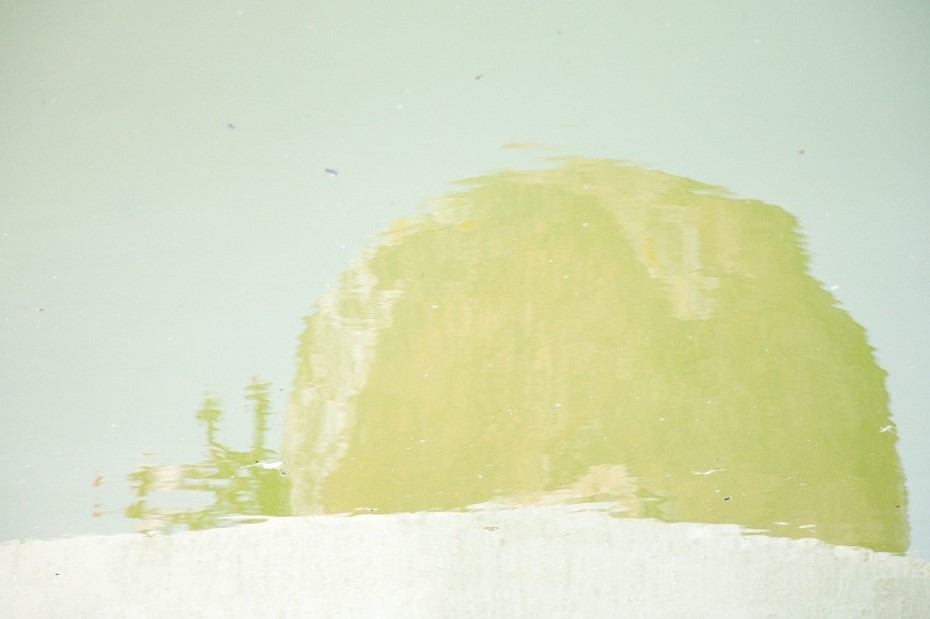

While embracing a state of heterogeneity, and complexity for our technological futures,
Collateral Commons questions how plural -and adversary- individual visions can come together to compose a creolized world.
In a future whose present is not yet taking place, it fuzzily redefines a common ground from local consistencies,
networked interdependent agents, and adaptive imperfect processes.
From there, a new civic society can awkwardly emerge, in acceptance of the inherent frictions of the individual bodies,
their contradictory tendencies, and categorical instability.
Far from these messianic glossy fantasies of smooth fully automated interfacial realms,
Collateral Commons adopts the mundane, the situatedness and the unscalability of things and processes at his core,
while wandering through a spectrum of collected civic materials.
A preliminary fieldwork aims to enrich -and somehow contest- the familiar narratives around AI-infused tomorrows,
by collecting opinions of diverse individuals on how do they see -or wish to see- smart new technologies affecting their life.
See the matter.
This opens the conversation.
"The Place" is an heterotopia. It acts as the speculative ground for these collateral commons,
an incomplete representation of the post-utopian society which emerged from the interviews:
it gives voices to these individuals while placing them on a shared evolving public space.
A token for a "plebeian public sphere."
The Place is a participative civic experiment, and we warmly invite you to join.
The conversation is on.
As new technologies are actively shaping and directing both our expectations, our trajectories,
and the way we enter in relation with the world, it is worth apprehending possible societal shifts,
and delineating where, in these speculative landscapes, lies individuals' intentions, hopes and fears.
This context urge us to think about a few questions percolating this project and furtively developed below.
How do we choose to reposition ourselves -as human, individuals and as a society faced to these coming displacements?
What shall we hold on -or not hold on? How to collectively define and architect the spaces for the tools we create,
and even more crucially the open spaces we keep free from them ?
Since these systems are being built, embedded, deployed, exported and imposed across territories and communities,
we have to enlarge our practice of humility, listening and care beyond what we used to. We would like to challenge
our techno-capitalist society shaped by the visions of the few, in the moment where humans need to cope with a new time complex,
no more human-centered, but machine-knitted. The periphery of the western dominant views are here welcomed as matter of relief,
topography and hope, to expose alternative ways, ideas, lifestyles.
Since competition, anxiety and social disorders are narrowing our will to aggregate, imagine, and work on better and more
articulated societies, we would like to inquire a future quasi-freed from labour. Which are the imposed parameters that fabricate
from a subject a "person"? The ruling economical parameters define the personhood of the individual through the exchange-value
of the labour he can offer, -but what if we can grow our self -and a sense of meaning- from other grounds, in the spirit of care,
and creativity?
Aware of the intrinsic limits of laying out a sense of the future or of an emancipatory turn, particularly when we have restlessly
been stewed, steeped and fragmented in a culture of technological opacity, invasive capitalism and individualism. Sketching
these collective visions for inclusive technological futures suggests a continuous non-linear practice,
fed by non-contemplative forms of hope, and plural confrontations.
We need to let this conversation open and evolve.
This project hatched during spring 2019 at the School of Disobedience in Berlin, by Carole, Dalia and Claire. It shall be seen not as a conclusion of arranged lines of thoughts, more as a counter-hegemonic exploratory pathway and the opening of a conversation. Some more detailed results of this preliminary research will be shared online soon (anonymously) and further developments of this project will follow. Stay tuned.:)
If you are curious, or if you have any question, comments or suggestions, feel free to reach us at collateral.commons@gmail.com. We would be glad to hear from you.